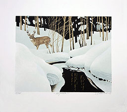
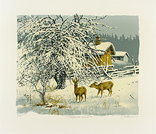
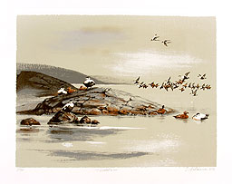
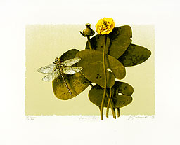
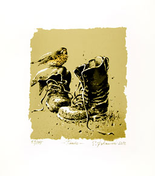
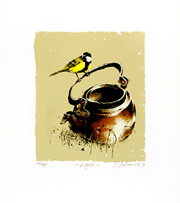
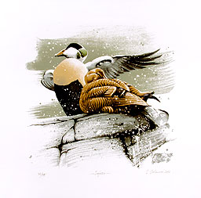
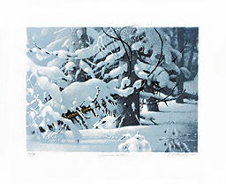

|  HILJAISELOA 12-värinen serigrafia, 2009 Vedosmäärä: 175 Kuva-ala: 45 x 32 cm Tuotenumero: 74 Hinta: 270 € |  TALVIPÄIVÄN SEISAUS (LOPPUUNMYYTY) Serigrafia, 2011 Vedosmäärä: 175 Kuva-ala: 43 x 36 cm Tuotenumero: 101 Hinta: 300 € |  UUSI LUODOLLA Serigrafia, 2012 Vedosmäärä: 175 Kuva-ala: 46 x 34 cm Tuotenumero: 108 Hinta: 300 € |
|  UUSI LAMMELLA Serigrafia, 2013 Vedosmäärä: 175 Kuva-ala: 31 x 25 cm Tuotenumero: 110 Hinta: 285 € |  UUSI TAUKO Serigrafia, 2012 Vedosmäärä: 175 Kuva-ala: 37 x 33 cm Tuotenumero: 112 Hinta: 270 € |  UUSI LÖYTÖ Serigrafia, 2012 Vedosmäärä: 175 Kuva-ala: 37 x 33 cm Tuotenumero: 113 Hinta: 270 € |
|  UUSI SUOJASSA Serigrafia, 2012 Vedosmäärä: 175 Kuva-ala: 36 x 35 cm Tuotenumero: 114 Hinta: 285 € |  UUSI LUMINEN METSÄ Serigrafia, 2013 Vedosmäärä: 175 Kuva-ala: 42 x 31 cm Tuotenumero: 119 Hinta: 300 € |
Yllämainitut hinnat ovat lehtenä, sis.alv. Kehystysneuvoja kauttamme. Ota yhteyttä sähköpostitse ja pyydä esittelyä tai tilaa suoraan.